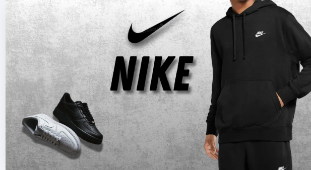
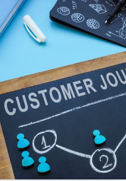

Proyecto Plan de marketing
Diseño y desarrollo de plan de marketing digital enfocado en redes sociales y posicionamiento de marca.
Ver proyecto en Canva →Aquí algunos proyectos en los que he trabajado.

Diseño y desarrollo de plan de marketing digital enfocado en redes sociales y posicionamiento de marca.
Ver proyecto en Canva →
Administración de redes sociales, creación de contenido, customer journey y análisis de métricas.
Ver proyecto en Canva →
Diseño y desarrollo de sitios web modernos, responsivos y optimizados para SEO y conversión.
Ver proyecto →